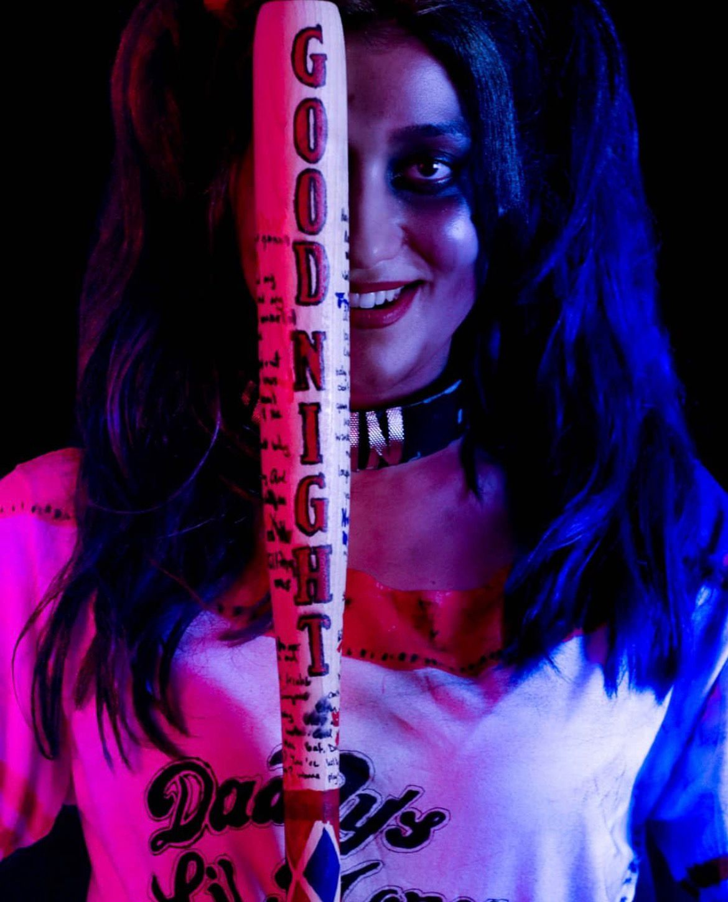
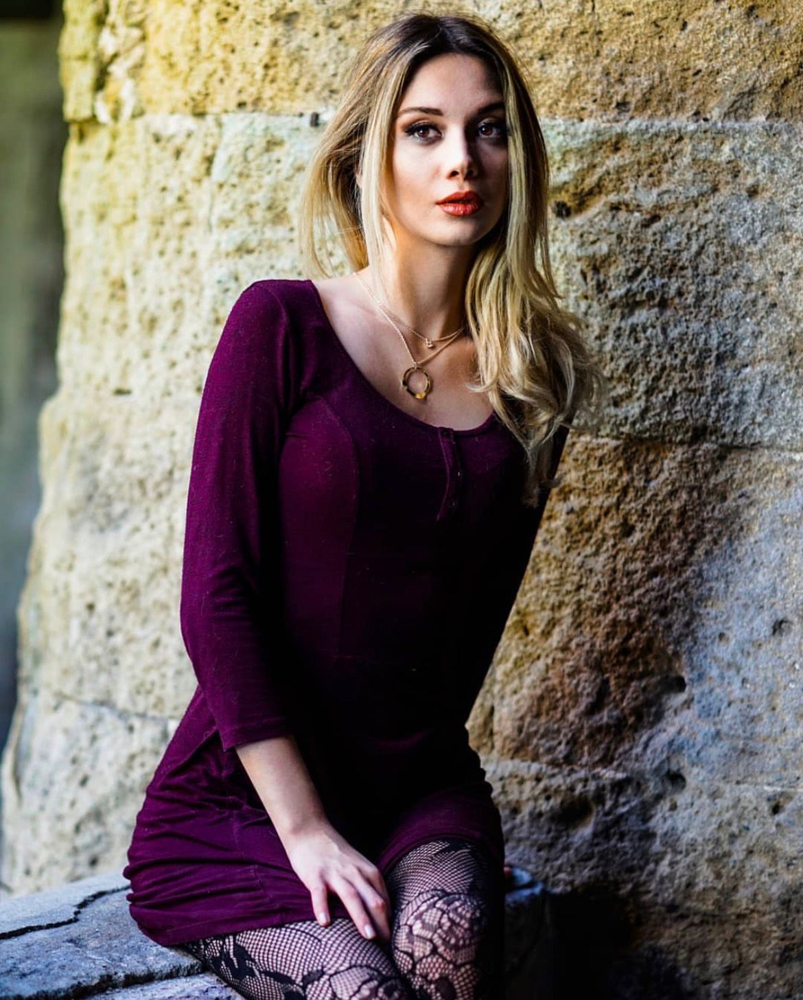
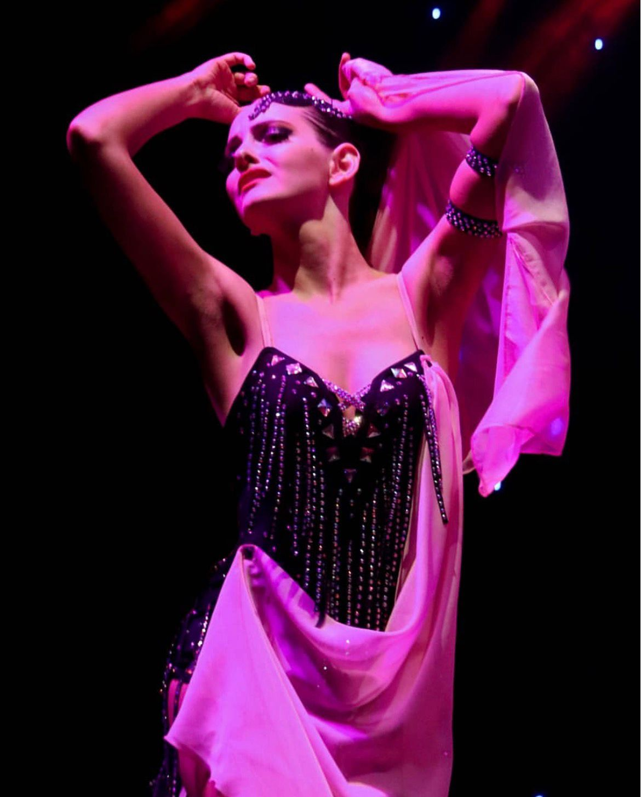
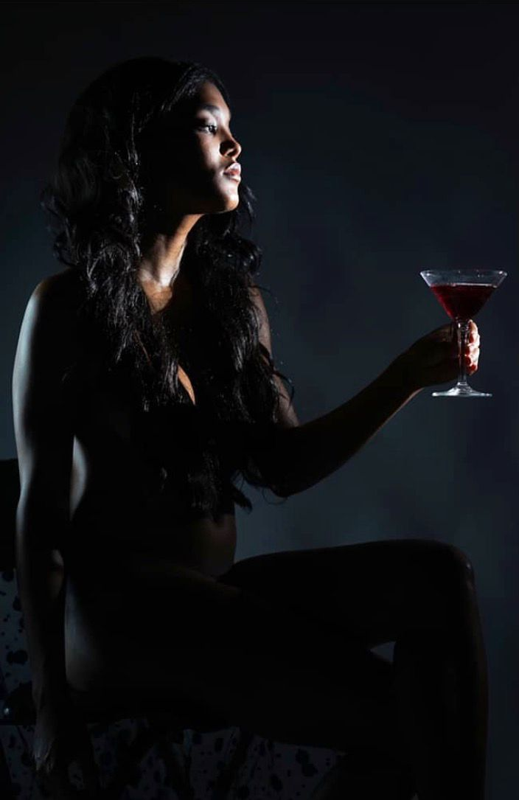
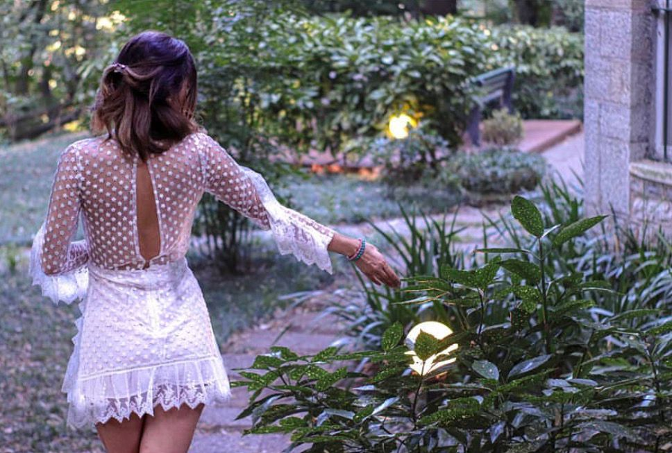
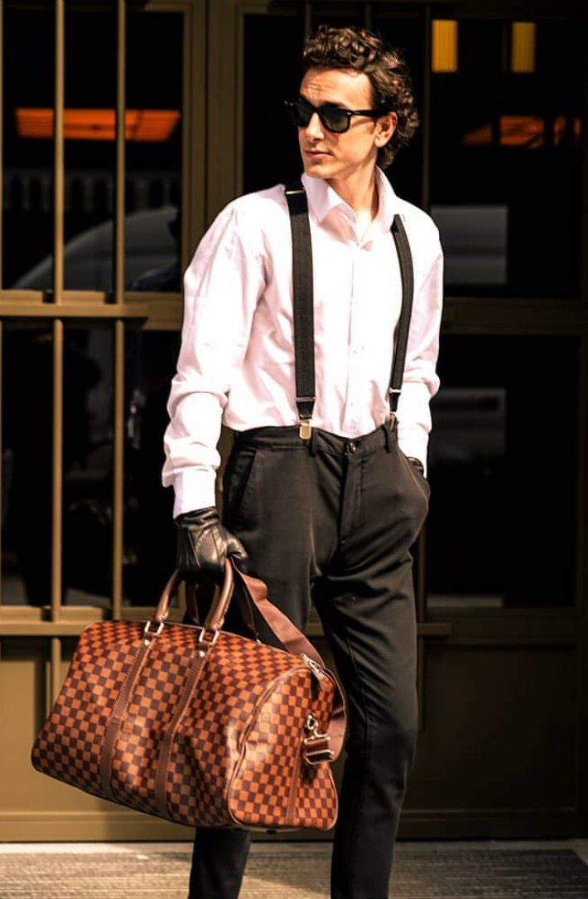
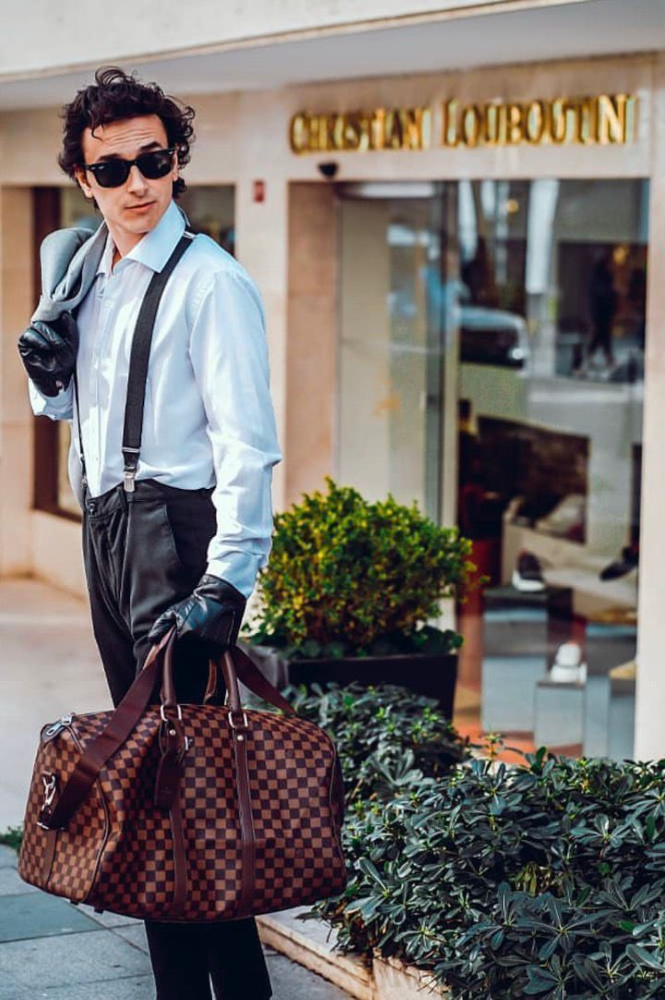
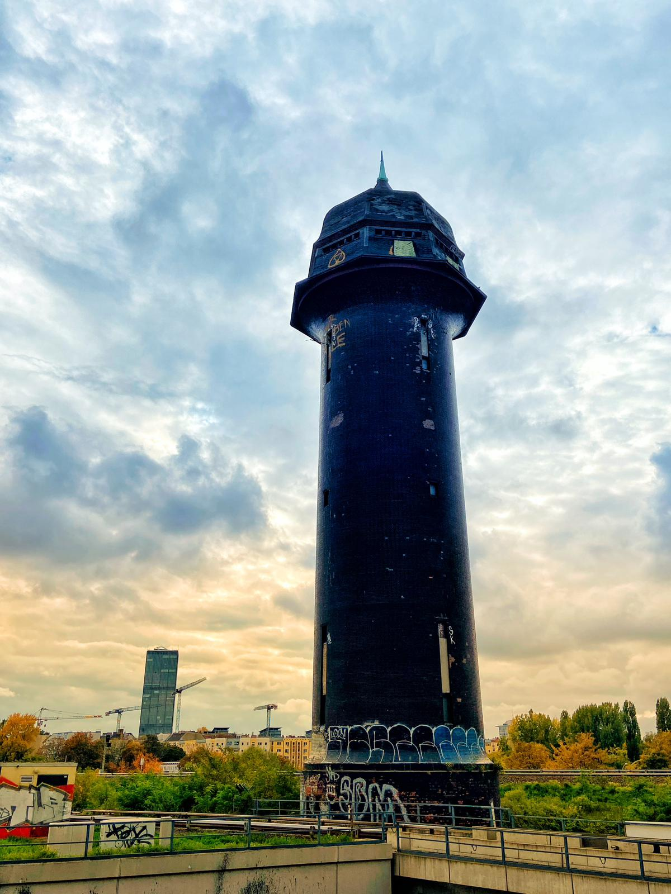
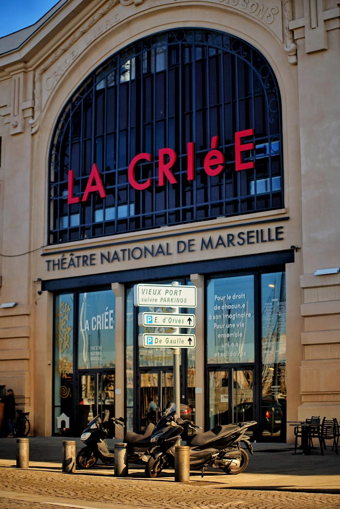
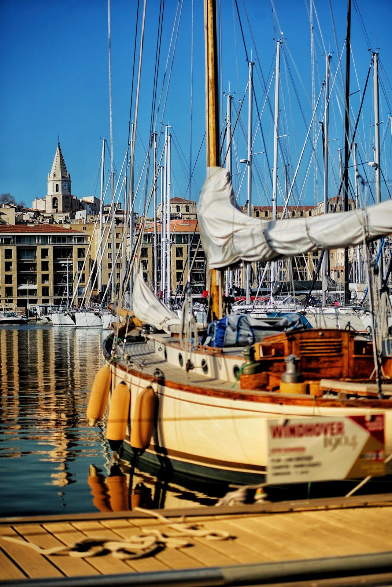

Photography, slow.
Street, travel, the occasional portrait. I shoot more than I post — most of it lives on a hard drive nobody else will see. The 21 frames below are a small album: across Berlin, Istanbul, and a couple of stops in between.
// off the clock
Sales is the day job. The rest is everything that makes the day job possible — long walks with a camera, weekends with my partner, a small fluffy supervisor at home, and a YouTube channel where we put pieces of it on the record. Names off the record here — but if you've stumbled onto this corner, you already get the vibe.
// vlog
YouTube · Travel + lifestyle · German & Turkish
A vlog channel I run with my partner — bits of life from across Berlin and Istanbul, occasional cooking, occasional trips, occasionally just our cat looking offended. Not optimised, not produced — just the parts of life we wanted to remember.
Watch on YouTube// the basics
Street, travel, the occasional portrait. I shoot more than I post — most of it lives on a hard drive nobody else will see. The 21 frames below are a small album: across Berlin, Istanbul, and a couple of stops in between.
The constant. My partner co-runs the YouTube channel and is the reason most of the good photos exist (someone has to be in front of the lens). The cat does her own marketing.
Karlsruhe, Stuttgart, Böblingen, Istanbul, Berlin. Each one left something — the engineering in Karlsruhe, the patience in Stuttgart, the customer obsession from store ops in Böblingen, the discipline of the Istanbul commercial floors, and Berlin is where they all came together.
Long-form walks with the camera and no plan are how I think. Most of the decisions in this portfolio were made between a U-Bahn stop and a coffee.
// the album













